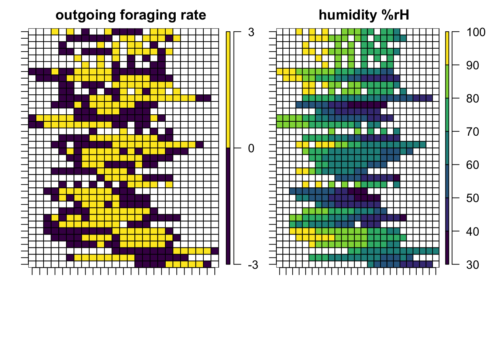

TC8: Timecourse foraging
Investigating colony variation in time-budgeting of daily foraging in harvester ants
Biplabendu Das
18 October, 2022
0. Housekeeping
Specify parameters.
# which treatment group (marked or unmarked)?
which.year <- c(2015:2017)
# specify bin width for calculating foraging rates (in minutes)
bin.width <- 15
# how many hours/day of observation do we need to include in the final analyses (in hours)
atleast <- 2- bin width to calculate rate of foraging (bin width = 15 mins)
- minimum hours/day of observations required for including in the anlayses (at least 2 hrs)
1. Annotate the data
# specify colony names that you want to use
colonies <- list("2015"=c("863"), # can't do "833" since the data is formatted differently.
"2016"=c("1017","1317","D19","D30"),
"2017"=c("859","1068","1107"))
# ANNOTATE DATA
for (j in 1:length(which.year)){
# where to look for data
folder.loc <- paste0(path_to_repo,path_to_data,which.year[j], "/")
which.colonies <- list.files(folder.loc)
which.colonies <- which.colonies[readr::parse_number(which.colonies) %in% colonies[[j]]]
# specify the order of the ants
# ants <- ants[order(match(ants,(left.incu %>% pull(values))))]
for (k in 1:length(which.colonies)) {
folder.loc2 <- paste0(folder.loc, which.colonies[[k]])
files <- list.files(folder.loc2)
for(i in 1:length(files)) {
# Specify the ant
file.names <- files[i]
## extract the name of the video and ant
colony.name <- readr::parse_number(which.colonies[[k]])
## read the data files:
foo <- readxl::read_excel(paste0(folder.loc2,"/",file.names),
col_names = F)
## define new colnames
if (ncol(foo)==2){
colnames(foo) <- c("time", "inout")
levs <- foo %>% pull(inout) %>% as.factor() %>% levels()
if (length(levs) > 2) {
foo <- foo[-1,]
levs <- foo %>% pull(inout) %>% as.factor() %>% levels()
}
if ("0" %in% levs) {
foo <- foo %>% mutate(inout = ifelse(inout==1, "In", "Out"))
}
} else if (ncol(foo)>2) {
foo <- foo[-1,c(1:2)]
colnames(foo) <- c("time", "inout")
foo <- foo %>% mutate(inout = ifelse(inout==1, "In", "Out"))
} else {
print("The number of columns are not equal to 2. Please check the file.")
stop()
}
## annotate the data - PART I
# foo %>%
foo %<>%
as_tibble() %>%
# add colony_ID and treatment columns
mutate(colony_ID=colony.name) %>%
mutate(year=which.year[j]) %>%
# extract date_time data
mutate(day = str_split(time,pattern = "T", n=2, simplify = T)[2]) %>%
mutate(t = str_extract(time, "(?<=[T])[^.]+")) %>%
# mutate(date_time = as.POSIXct(paste0(day," ",time))) %>%
mutate(inout = trimws(inout, which = c("both")))
# remove placeholder columns
# select(-day, -t)
## annotate the data - PART II
## annotate the data
foo %>%
mutate(ant_ID = "unmarked") %>%
# rearrange colnames for aes
select(colony_ID, year, inout, ant_ID,
everything()) %>%
as.data.frame() %>%
write.csv(.,
file = paste0(path_to_repo,path_to_data,
"../annotated/",
which.year[j],
"/annotated_",
str_split_fixed(file.names,".x",2)[1],".csv"),
row.names = F)
}
}
}Here, I have performed several steps to get the data into a consistent format, and to embed the metadata into the table (see example below).
foo %>%
head() %>%
kableExtra::kable(caption = "Annotated data | example of annotation added to the data",
align = "c") %>%
kableExtra::kable_styling(bootstrap_options = "striped", full_width = F, position = "center")| time | inout | colony_ID | year | day | t |
|---|---|---|---|---|---|
| 2017-08-21T08:04:25.185-07:00 | In | 859 | 2017 | 2017-08-21 | 08:04:25 |
| 2017-08-21T08:07:44.222-07:00 | Out | 859 | 2017 | 2017-08-21 | 08:07:44 |
| 2017-08-21T08:08:26.435-07:00 | Out | 859 | 2017 | 2017-08-21 | 08:08:26 |
| 2017-08-21T08:09:05.866-07:00 | Out | 859 | 2017 | 2017-08-21 | 08:09:05 |
| 2017-08-21T08:09:21.373-07:00 | Out | 859 | 2017 | 2017-08-21 | 08:09:21 |
| 2017-08-21T08:09:29.703-07:00 | Out | 859 | 2017 | 2017-08-21 | 08:09:29 |
Note, I have extracted the year, day, and t values from the time column, and added the colony_ID to indicate the observed colony.
2. Combine all the data
## create a data.frame to save the results
dat.pagliara <- data.frame()
for(j in 1:length(which.year)) {
# where to look for data
folder.loc <- paste0(path_to_repo,path_to_data,
"../annotated/",
which.year[j], "/")
files <- list.files(folder.loc)
for(i in 1:length(files)) {
# load the file
annot.data <- read.csv(paste0(folder.loc,files[i]),
header = T, stringsAsFactors = F)
# # check if there is at least two hours of data
# annot.data %>%
# mutate(t = as.POSIXct(t,format="%H:%M:%S")) %>%
# group_by(colony_ID, day) %>%
# summarize(duration = max(t)-min(t))
if(nrow(dat.pagliara)==0) {
dat.pagliara <- annot.data
} else {
dat.pagliara <- rbind(dat.pagliara,annot.data)
}
}
}2.1 Data 2018 Nova et al.
Add the data from 2022 Nova et al. to the 2018 Pagliara et al. dataset
dat.nova <- read.csv(paste0(path_to_repo,"/../2022_Nova_et_al/04_results/all_data_2022_nova_et_al.csv"), header = T)
all.dat <- rbind(dat.pagliara,dat.nova) %>% as_tibble()Replace colony ID == “10” to “1010”
all.dat <-
all.dat %>%
mutate(colony_ID = ifelse(colony_ID == "10", "1010", colony_ID))2.2 Summarize data
Summary table | number of hours of observations per colony on a given day
# obtain colony age information
colony.dat <- read.csv(paste0(path_to_repo,"/01_data/colony_age_info.csv"),
header = T, stringsAsFactors = F,
na.strings = c(""," ",NA)) %>% as_tibble() %>%
mutate(colony_ID = ifelse(colony_ID == "10", "1010", colony_ID))
summ.dat <- all.dat %>%
mutate(time = as.POSIXct(paste(day, t),format="%Y-%m-%d %H:%M:%S")) %>%
group_by(colony_ID, day, year) %>%
summarize(start_time = min(time),
end_time = max(time)) %>%
mutate(duration = difftime(end_time,start_time, units = "hours") %>% round(.,2)) %>%
mutate(start_time = format(start_time, format = "%H:%M:%S")) %>%
mutate(end_time = format(end_time, format = "%H:%M:%S")) %>%
arrange(year,colony_ID) %>%
## add colony info
left_join(colony.dat, by="colony_ID") %>%
## calculate age at observation
mutate(age_when_obs = year-year_age_one+1) %>%
## calculate age when dead
mutate(age_dead = year_dead-year_age_one+1)
# View the summary table
summ.dat %>%
select(colony_ID:year_age_one) %>%
DT::datatable()## Save the summary table to a csv file
summ.dat %>%
ungroup() %>%
select(colony_ID, year,
day_of_obs = day,
duration_hrs = duration,
everything()) %>%
mutate_all(as.character) %>%
# save the file
write.csv(.,
paste0(path_to_repo,"/04_results/","all_data_summary.csv"),
row.names = F)For our purposes, we are only going to use colonies that have at least 2 hours of foraging data for a given day.
3. Clean the data
Remove the colony-days that have less than 2 hours of observations.
all.dat <-
all.dat %>%
mutate(time = as.POSIXct(paste(day, t),format="%Y-%m-%d %H:%M:%S")) %>%
group_by(colony_ID, day, year) %>%
summarize(start_time = min(time),
end_time = max(time),
duration = difftime(end_time,start_time, units = "hours") %>% round(.,2)) %>%
ungroup() %>%
arrange(year,colony_ID) %>%
mutate(keep_row = ifelse(duration>=atleast, "yes","no")) %>%
right_join(all.dat)
# Subset the dataset accordingly
dat <- all.dat %>% filter(keep_row=="yes")
# Add the colony age information
dat <- dat %>%
left_join(summ.dat %>% select(colony_ID, day, age_when_obs, age_dead), by = c("colony_ID","day"))
# Classify into age class (1-2, 3-4, 5+ years old)
dat <- dat %>%
mutate(age_class = ifelse(age_when_obs <= 2, "1-2_yr",
ifelse(age_when_obs > 2 & age_when_obs <= 4, "3-4_yr",
"5+_yr"))) %>%
mutate(age_class = factor(age_class,
levels = c("1-2_yr", "3-4_yr", "5+_yr")))Setting the order of the colonies to match age-class…
# which colonies?
colonies <- dat %>% arrange(age_when_obs) %>% pull(colony_ID) %>% unique()
# colonies <- dat %>% pull(colony_ID) %>% unique() %>% sort()4. Visualize the data
Plot outgoing/incoming foragers v. time
# what is the range for time of observation?
x.lims <- c(min(as.POSIXct(dat$t,format="%H:%M:%S")), max(as.POSIXct(dat$t,format="%H:%M:%S")))
plots <- list()
k <- 1
for(i in 1:length((colonies))) {
foo <- dat %>% filter(colony_ID == (colonies)[i])
days <- foo %>% pull(day) %>% unique()
if (nrow(foo)>0){
for (j in 1:length(days)) {
plots[[k]] <-
foo %>%
filter(day==days[j]) %>%
# filter(treatment=="unmarked") %>%
# select(t, treatment) %>%
mutate(t.obs=as.POSIXct(t,format="%H:%M:%S")) %>%
ggplot(aes(x=t.obs, fill=as.factor(inout))) +
# geom_bar(position = "dodge") +
geom_density(alpha=0.7) +
facet_grid(~age_class) +
labs(title = paste0("Colony: ",(colonies)[i]),
subtitle = paste0("Date: ", days[j])) +
labs(x="time of day", y="density") +
scale_x_datetime(limits = x.lims) +
scale_y_continuous(breaks = 3) +
theme_Publication(base_size = 10) +
scale_fill_Publication(name = "") +
theme(plot.subtitle=element_text(hjust=0.5))
k <- k+1
}
}
}Visualize daily fluctuations
density of foragers going out of and coming in to the colony as a function of time
Density plots of number of out/in-going foragers
5. Obtain in/out foraging rates
Data for 2022 field season
path_to_2022data <- paste0(path_to_repo, "/../../04_field_work/00_data/")
dat.2022 <- read.csv(paste0(path_to_2022data, "timecourse_foraging_2022.csv"), header = T,
stringsAsFactors = F, na.strings = c(""," ","NA")) %>% as_tibble()
dat.2022 <-
dat.2022 %>%
select(-was_it_raining, -observer_initial, -obs_1, -obs_2) %>%
filter(!is.na(time)) %>%
arrange(colony_ID) %>%
mutate(n_in = select(., starts_with("in")) %>% rowSums(., na.rm = T),
n_out = select(., starts_with("out")) %>% rowSums(., na.rm = T)) %>%
select(day, colony_ID, time, n_in, n_out) %>%
# calculate rate as ants/minute
mutate(r_in = round(n_in/0.5,2),
r_out = round(n_out/0.5,2)) %>%
mutate(t.obs=as.POSIXct(time,format="%H:%M")) %>%
# create the bins here
mutate(t.bin = floor_date(t.obs, paste(bin.width,"minutes"))) %>%
group_by(colony_ID, day, t.bin) %>%
summarize(r_in = mean(r_in),
r_out = mean(r_out)) %>%
ungroup() %>%
pivot_longer(cols = r_in:r_out,
names_to = "inout",
values_to = "r_ants") %>%
mutate(inout = ifelse(inout=="r_in", "In", "Out")) %>%
mutate(day = as.POSIXct(day, format="%m/%d/%y")) %>%
mutate(day = as.character(day))
## colony age info
path_to_2022colonydata <- "/Users/biplabendudas/Documents/05_postdoc/Deborah_Gordon/04_research/2022/02_bead_data"
colony.dat.2 <- read.csv(paste0(path_to_2022colonydata, "/data/foraging_counts_08_13_22.csv"),
stringsAsFactors = F, header = T) %>% as_tibble() %>%
select(colony_ID, everything()) %>%
# mutate(colonyID = as.factor(colonyID)) %>%
mutate(age_class = ifelse(age_2022 <= 2, "1-2_yr",
ifelse(age_2022 > 2 & age_2022 <= 4, "3-4_yr",
"5+_yr")))
## add colony age info to dat.2022
dat.2022 <- dat.2022 %>%
left_join(colony.dat.2 %>% select(colony_ID, age_obs=age_2022, age_class), by="colony_ID") %>%
mutate(colony_ID = as.character(colony_ID)) %>%
distinct()Combine 2022 data with previous data
Making 15 minute bins for calculating rate of in/out foraging
b.dat <-
dat %>%
as_tibble() %>%
# head(100) %>%
filter(keep_row == "yes") %>%
mutate(t.obs=as.POSIXct(t,format="%H:%M:%S")) %>%
# select(colony_ID:treatment,inout,ant_ID,day, t.obs) %>%
# create the bins here
mutate(t.bin = floor_date(t.obs, paste(bin.width,"minutes"))) %>%
# calculate the rate of foraging
group_by(colony_ID,inout, day, t.bin, age_class) %>%
summarize(n_ants =n()) %>%
mutate(r_ants = n_ants/bin.width) %>%
ungroup() %>%
select(-n_ants) %>%
left_join(dat %>% select(colony_ID,age_obs=age_when_obs), by="colony_ID") %>%
select(colony_ID, day, t.bin, inout, r_ants, age_obs, age_class) %>%
distinct()
## Combine the previous data (b.dat) with 2022 dataset (dat.2022)
b.dat <- rbind(dat.2022, b.dat) %>% distinct()
## Clean up space
rm(all.dat, dat.nova, dat.pagliara)
colonies <- b.dat %>% arrange(age_obs) %>% pull(colony_ID) %>% unique()Let’s visualize the in/out rates (and compare them to the density plots).
## Plot the in/out rates
x.lims <- c(min(b.dat$t.bin), max(b.dat$t.bin))
plots <- list()
k <- 1
for(i in 1:length((colonies))) {
foo <- b.dat %>% filter(colony_ID == (colonies)[i])
days <- foo %>% pull(day) %>% unique()
y.max <- max(foo$r_ants, na.rm = T)
if (nrow(foo)>0){
for (j in 1:length(days)) {
plots[[k]] <-
foo %>%
filter(day==days[j]) %>%
# filter(treatment=="unmarked") %>%
# select(t, treatment) %>%
# group_by(colony_ID,inout, day, t.bin) %>%
# summarize(n_ants =n()) %>%
# mutate(r_ants = n_ants/bin.width) %>%
# ungroup() %>%
ggplot(aes(x=t.bin, y=r_ants, fill=as.factor(inout), group=as.factor(inout))) +
geom_area(position = position_dodge(width = 1), alpha=0.7) +
facet_grid(~age_obs) +
labs(title = paste0("Colony: ",(colonies)[i]),
subtitle = paste0("Date: ", days[j])) +
labs(x="time of day", y="rate (ants/min)") +
scale_y_continuous(n.breaks = 3, limits = c(0,y.max)) +
scale_x_datetime(limits = x.lims, date_breaks = "3 hours", date_labels = "%H:%m") +
theme_Publication(base_size = 10) +
scale_fill_Publication(name = "") +
theme(plot.subtitle=element_text(hjust=0.5))
k <- k+1
}
}
}Rate of out/in-going foragers
Total foraging rate
in.out.dat <-
b.dat %>%
distinct() %>%
group_by(colony_ID, day, t.bin, age_obs, age_class) %>%
pivot_wider(names_from = inout,
values_from = r_ants) %>%
ungroup() %>%
rename(c(r_in = "In", r_out = "Out"))Total (in + out) rate of foraging
Total activity ~ colonies
Let’s calculate a metric that would represent the standardized, total activity of the colonies.
standardized measure of total_activity = area_under_time_activity_curve / duration_in_minutes
pacman::p_load(pracma)
## Plot the in/out rates
auc.dat <- in.out.dat %>% mutate(auc = NA, dur_mins = NA)
# auc <- list()
# k <- 1
for(i in 1:length(colonies)) {
foo <- in.out.dat %>% filter(colony_ID == (colonies)[i])
days <- foo %>% pull(day) %>% unique()
x.max <- max(foo$r_in, na.rm = T)
y.max <- max(foo$r_out, na.rm = T)
if (nrow(foo)>0){
for (j in 1:length(days)) {
# plots[[k]] <-
bar <-
foo %>%
filter(day==days[j]) %>%
rownames_to_column("time_point") %>%
group_by(t.bin) %>%
mutate(t_rate = r_in + r_out) %>%
mutate(time_point = as.numeric(time_point))
auc = trapz(x=bar$time_point, y=bar$t_rate)
dur = as.numeric(max(bar$t.bin) - min(bar$t.bin))*60
auc.dat[auc.dat$colony_ID==colonies[i] & auc.dat$day==days[j],]$auc <- auc
auc.dat[auc.dat$colony_ID==colonies[i] & auc.dat$day==days[j],]$dur_mins <- dur
}
}
}
## Set up the dataset for plotting
auc.dat.plot <-
auc.dat %>%
select(colony_ID:age_class, auc, dur_mins) %>%
select(-t.bin) %>%
distinct() %>%
arrange(colony_ID) %>%
na.omit()
# ## remove colony IDs that might be outliers or not have enough data
# filter(!colony_ID %in% c("509"))
## Plot by age-class
png(paste0(path_to_repo2,
"total_foraging_v1.png"),
width = 30, height = 35, units = "cm", res = 200)
auc.dat.plot %>%
ggplot(aes(x=age_class, y=auc/dur_mins)) +
# geom_violin(alpha = 0.4) +
# geom_point(size=2, alpha=0.7, aes(col=colony_ID)) +
geom_jitter(width = 0.1, size=10, alpha=0.8,
aes(fill=as.factor(colony_ID)),
shape=21) +
# geom_boxplot(alpha=0.8, size=3, color="grey60") +
stat_summary(fun = mean, geom = "point", col="black",
size=20, alpha=0.8,
position=position_nudge(x = 0.3, y = 0)) +
stat_summary(fun.data = mean_cl_boot,
size=3, alpha = 0.8,
geom = "errorbar", width = 0.2, fun.args = list(conf.int = 0.95),
position=position_nudge(x = 0.3, y = 0)) +
theme_Publication(base_size = 30) +
# theme_classic() +
# scale_x_continuous(n.breaks = 3, limits = c(0,max(x.max,y.max))) +
# scale_y_continuous(n.breaks = 3, limits = c(0,max(.$auc/.$dur_mins))) +
labs(title = "Colony foraging activity",
subtitle = "standardized by duration of obs.",
y = "activity \n(mean ± 95% CI)",
x = "age-groups") +
scale_color_discrete() +
scale_fill_discrete() +
# theme(legend.position="none") +
theme(plot.subtitle=element_text(hjust=0.5, size=20),
legend.title = element_blank()) +
theme(legend.position="bottom", legend.box="vertical", legend.margin=margin()) +
coord_flip()
trash <- dev.off()
## Plot by age
png(paste0(path_to_repo2,
"total_foraging_v2.png"),
width = 30, height = 35, units = "cm", res = 200)
auc.dat.plot %>%
ggplot(aes(x=age_obs, y=auc/dur_mins)) +
# plot polynomial model fit
geom_smooth(method='lm',
formula = y ~ poly(x, 4) ,
col="black", alpha=0.4, size=5) +
geom_jitter(width = 0.1, size=10, alpha=0.8,
aes(fill=as.factor(colony_ID)),
shape=21) +
# add the labels to the points
ggrepel::geom_label_repel(aes(label = colony_ID),
segment.colour = NA,
alpha=0.9) +
theme_Publication(base_size = 30) +
labs(title = "Colony foraging activity",
subtitle = "black line shows a fourth-order polynomial fit; y ~ poly(x, 4)",
y = "activity",
x = "age (in years)") +
scale_color_discrete() +
scale_fill_discrete() +
# theme(legend.position="none") +
theme(plot.subtitle=element_text(hjust=0.5, size=20),
legend.title = element_blank()) +
theme(legend.position="bottom", legend.box="vertical", legend.margin=margin())
trash <- dev.off()
## Plot by day
png(paste0(path_to_repo2,
"total_foraging_v3.png"),
width = 30, height = 40, units = "cm", res = 200)
auc.dat.plot %>%
left_join(summ.dat %>% ungroup() %>%
select(colony_ID, age_when_obs), by="colony_ID") %>%
distinct() %>%
ggplot(aes(x=as.factor(day), y=auc/dur_mins)) +
# geom_boxplot(alpha=0.5) +
# geom_violin(alpha = 0.4) +
# geom_point(size=2, alpha=0.7, aes(col=colony_ID)) +
geom_jitter(width = 0.1, size=10, alpha=0.8,
aes(col=as.factor(colony_ID), shape=as.factor(age_class))) +
# add the labels to the points
ggrepel::geom_label_repel(aes(label = colony_ID),
# segment.colour = "NA",
alpha=0.9) +
theme_Publication(base_size = 30) +
# theme_classic() +
# scale_x_continuous(n.breaks = 3, limits = c(0,max(x.max,y.max))) +
# scale_y_continuous(n.breaks = 3, limits = c(0,max(.$auc/.$dur_mins))) +
labs(title = "Colony foraging activity",
subtitle = "standardized by duration of obs.",
y = "activity",
x = "day of observation") +
scale_color_discrete() +
scale_fill_discrete() +
coord_flip() +
# theme(legend.position="none") +
theme(plot.subtitle=element_text(hjust=0.5, size=20),
legend.title = element_blank()) +
theme(legend.position="bottom", legend.box="vertical", legend.margin=margin())
trash <- dev.off()Total foraging activity by age-groups
Total foraging activity by age
Total foraging activity by day of observation
6. In v. Out rate ~ time
I/O plots as a function of time
7 Colony age classes
categorize the colonies into age groups
- ≤ 2: young
- 2-4: teen
- above 5: adult/old
Colony per age-class?
mod.dat <-
in.out.dat %>%
mutate(r_tot = r_in + r_out) %>%
mutate(age_class = as.factor(age_class)) %>%
mutate(t.bin = as.factor(format(t.bin, format="%H:%M:%S"))) %>%
# mutate(t.bin = as.numeric(t.bin)) %>% # time as numeric
select(colony_ID:r_out, r_tot, everything()) %>%
na.omit() %>%
mutate(day = as.factor(day),
colony_ID = as.factor(colony_ID))
# convert time to circular variables
linear.time <- mod.dat %>% pull(t.bin) %>% unique() %>% sort() %>% as.character()
linear.time2 <- seq(6.75, 12.75, by=0.25)
time.dat <- data.frame(t.bin = linear.time,
lin_time = linear.time2)
time.dat <- cbind(time.dat, limorhyde::limorhyde(time.dat$lin_time, "time_"))
# add this information to mod.dat
mod.dat <-
mod.dat %>%
left_join(time.dat, by="t.bin")mod.dat %>%
select(colony_ID, day, age_obs, age_class) %>%
distinct() %>%
group_by(age_obs) %>%
summarize(col_days = n(),
which_colonies = paste(unique(colony_ID), collapse = ", ")) %>%
kableExtra::kable(caption = "Annotated data | example of annotation added to the data",
align = "c") %>%
kableExtra::kable_styling(bootstrap_options = "striped", full_width = F, position = "center")| age_obs | col_days | which_colonies |
|---|---|---|
| 2 | 4 | 1536, 1552, 1571, 1581 |
| 3 | 4 | 1504, 1506, 1368 |
| 4 | 1 | 1440 |
| 5 | 3 | 1317 |
| 7 | 2 | 1242 |
| 11 | 1 | 1317 |
| 12 | 5 | 1107 |
| 14 | 7 | 1010, 1017, 1068 |
| 17 | 1 | 1107 |
| 18 | 3 | 863 |
| 19 | 3 | 758, 859 |
| 20 | 1 | 1017 |
| 24 | 1 | 509 |
summarize the daily foraging rhythms for each age-class
mod.dat %>%
group_by(age_class, t.bin) %>%
summarize(
avg_in = mean(r_in),
avg_out = mean(r_out),
avg_tot = mean(r_tot),
se_tot = sd(r_tot)/n()
) %>%
ggplot(aes(x=t.bin, y=avg_out, group=age_class, color=age_class, fill=age_class)) +
# ggplot(aes(x=t.bin, y=avg_in, group=age_class, color=age_class, fill=age_class)) +
# ggplot(aes(x=t.bin, y=avg_out, group=age_class, color=age_class, fill=age_class)) +
geom_area(position = position_dodge(width = 0), alpha=0.75) +
geom_line(size=2, col="black", alpha=0.65) +
facet_grid(age_class~.) +
# coord_flip() +
labs(x="time of day (h)",
y="ants per min",
title = "average rate of \noutgoing foragers \n") +
# labs(title = paste0("Colony: ",(colonies)[i]),
# subtitle = paste0("Date: ", days[j])) +
scale_y_continuous(n.breaks = 4, labels = c("","25","","75")) +
# scale_x_datetime(limits = x.lims, date_breaks = "3 hours", date_labels = "%H:%m") +
theme_Publication(base_size = 20) +
theme(axis.text.x=element_text(angle=90,hjust=1)) +
scale_x_discrete( labels = c("","7:00","","",
"","8:00","","",
"","9:00","","",
"","10:00","","",
"","11:00","","",
"","12:00","","", "")) +
# scale_fill_manual(values = c("red","blue","green"))
theme(plot.subtitle=element_text(hjust=0.5))
8. Prelim. analyses I
Now, let’s see what explains the variation in total foraging rate of the different colonies.
Q1. Do colonies belonging to differet age categories show differences in their foraging?
mod.full <- lme4::lmer(r_out ~ age_class + (time_cos + time_sin) + day + (1|colony_ID) + (1|day:colony_ID),
data=mod.dat, REML=F)
mod.red.1 <- lme4::lmer(r_out ~ day + (time_cos + time_sin) + (1|colony_ID) + (1|day:colony_ID),
data=mod.dat, REML=F)
anova(mod.full, mod.red.1, test="Chisq")## Data: mod.dat
## Models:
## mod.red.1: r_out ~ day + (time_cos + time_sin) + (1 | colony_ID) + (1 |
## mod.red.1: day:colony_ID)
## mod.full: r_out ~ age_class + (time_cos + time_sin) + day + (1 | colony_ID) +
## mod.full: (1 | day:colony_ID)
## Df AIC BIC logLik deviance Chisq Chi Df Pr(>Chisq)
## mod.red.1 26 4402.1 4510.1 -2175.0 4350.1
## mod.full 28 4400.6 4516.9 -2172.3 4344.6 5.4877 2 0.06432 .
## ---
## Signif. codes: 0 '***' 0.001 '**' 0.01 '*' 0.05 '.' 0.1 ' ' 1Ans: The (outgoing) foraging of a colony doesn’t seem to significantly affected by age class (1-2 v. 3-4 v. >=5 year old colonies).
Q2. Does the rate of foraging depend on the time of day?
mod.red.2 <- lme4::lmer(r_out ~ age_class + day + (1|colony_ID) + (1|day:colony_ID),
data=mod.dat, REML=F)
anova(mod.full, mod.red.2, test="Chisq")## Data: mod.dat
## Models:
## mod.red.2: r_out ~ age_class + day + (1 | colony_ID) + (1 | day:colony_ID)
## mod.full: r_out ~ age_class + (time_cos + time_sin) + day + (1 | colony_ID) +
## mod.full: (1 | day:colony_ID)
## Df AIC BIC logLik deviance Chisq Chi Df Pr(>Chisq)
## mod.red.2 26 4407.7 4515.7 -2177.9 4355.7
## mod.full 28 4400.6 4516.9 -2172.3 4344.6 11.138 2 0.003814 **
## ---
## Signif. codes: 0 '***' 0.001 '**' 0.01 '*' 0.05 '.' 0.1 ' ' 1Ans: Yes, the total foraging of harvester ant colonies significantly fluctuates with time.
Q3. Does the rate of foraging change on a day-to-day basis?
mod.red.3 <- lme4::lmer(r_out ~ age_class + (time_cos + time_sin) + (1|colony_ID),
data=mod.dat, REML=F)
anova(mod.full, mod.red.3, test="Chisq")## Data: mod.dat
## Models:
## mod.red.3: r_out ~ age_class + (time_cos + time_sin) + (1 | colony_ID)
## mod.full: r_out ~ age_class + (time_cos + time_sin) + day + (1 | colony_ID) +
## mod.full: (1 | day:colony_ID)
## Df AIC BIC logLik deviance Chisq Chi Df Pr(>Chisq)
## mod.red.3 7 4521.7 4550.8 -2253.9 4507.7
## mod.full 28 4400.6 4516.9 -2172.3 4344.6 163.14 21 < 2.2e-16 ***
## ---
## Signif. codes: 0 '***' 0.001 '**' 0.01 '*' 0.05 '.' 0.1 ' ' 1Ans: As was expected, yes, the daily foraging of a colony does show significant day-to-day fluctuations.
Q4. Does the temporal patterns in foraging of different age classes differ?
mod.full.2 <- lme4::lmer(r_out ~ age_class*(time_cos + time_sin) + day + (1|colony_ID) + (1|day:colony_ID),
data=mod.dat, REML=F)
anova(mod.full.2, mod.full, test="Chisq")## Data: mod.dat
## Models:
## mod.full: r_out ~ age_class + (time_cos + time_sin) + day + (1 | colony_ID) +
## mod.full: (1 | day:colony_ID)
## mod.full.2: r_out ~ age_class * (time_cos + time_sin) + day + (1 | colony_ID) +
## mod.full.2: (1 | day:colony_ID)
## Df AIC BIC logLik deviance Chisq Chi Df Pr(>Chisq)
## mod.full 28 4400.6 4516.9 -2172.3 4344.6
## mod.full.2 32 4401.7 4534.6 -2168.8 4337.7 6.8918 4 0.1417Ans: The current data suggests NOT A yes would suggest that temporal patterns in foraging of colonies are different between age classes. However, as the summary table above shows, we do not have enough data for the 1-2-year and 3-4-year-old colonies as compared to adults (5 and above). So, we will need to obtain more data, especially for younger colonies, before we can interpret results.
9. Prelim. analyses II
Up next: Clustering the different colonies based on their daily foraging activity (r_tot)
9.1 Prep data
- standardize the daily foraging activity (z-score transform the data)
- make a colony-day X time-of-day matrix (plot shown below)
# Prep data into a matrix where rows==colony, and columns==timepoints
# number of rows = number of unique colony-days
name.rows <-
mod.dat %>%
group_by(colony_ID, day, age_obs) %>%
summarize(num_of_timepoints = n()) %>%
ungroup() %>%
group_by(colony_ID) %>%
mutate(which_day = row_number()) %>%
arrange(age_obs) %>%
mutate(colony_day = paste0(age_obs," yr | ", colony_ID, "_D",which_day)) %>% pull(colony_day)
# number of columns = number of time points per day
name.cols <- paste0("T",time.dat$t.bin)
cluster.dat <- matrix(data=0,nrow=length(name.rows), ncol=length(name.cols))
rownames(cluster.dat) <- name.rows
colnames(cluster.dat) <- name.cols
k <- 1
for(i in 1:length(colonies)) {
foo <- mod.dat %>% filter(colony_ID == colonies[[i]]) %>% select(t.bin, day, r_tot)
days <- foo %>% pull(day) %>% unique()
for (j in 1:length(days)) {
cluster.dat[k,] <-
foo %>%
filter(day==days[[j]]) %>%
right_join(time.dat, by="t.bin") %>%
pull(r_tot) %>%
round(.,2) %>%
scale(., center = T, scale = T)
k <- k+1
}
}
## Plot the matrix
library(plot.matrix)
par(mar=c(6.1, #bottom
10.1, #left
1, #top
3.1)) #right
cluster.dat %>%
# imputeTS::na_interpolation() %>%
plot(.,
col=viridis::viridis(4),
spacing.key=1.5,
fmt.key="%.0f",
xlab = "",
ylab = "",
axis.col=list(side=1, las=2), axis.row = list(side=2, las=1)
)
In the above plot, colors represent the relative foraging rate (z-scores = x-mean/sd) for a given colony-day. Yellow blocks point to the time of day of highest foraging activity.
9.2 Cluster timeseries
Next, we look to cluster these colony-day time-series. For a preliminary run, we use the tsclust() function from the dtwclust package. However, the clustering function do not allow using matrix with missing values, so I used the na_interpolation() function from the imputeTS package to interpolate the misssing values.
Please note, the following section is not meant to be accurate but provides an example of the type of analyses one could conduct.
# # load necessary libraries
# pacman::p_load(dtwclust, imputeTS)
# # ?tsclust
# # clustering tutorial: https://rpubs.com/esobolewska/dtw-time-series
# # NA imputation tutorial: https://stackoverflow.com/questions/27368195/r-ts-with-missing-values
#
# clust.hier <- tsclust(cluster.dat %>% na_interpolation(),
# type="h",
# k=4L, distance="dtw")
# clust.pam <- tsclust(cluster.dat %>% na_interpolation(),
# type="partitional",
# k=4L, distance="dtw", centroid="pam")
# # plot(clust.pam, type="sc")
# plot(clust.pam, type="centroids")
# t(cbind(cluster.dat[,0], cluster = clust.hier@cluster)) %>% t()
# writeLines("comparing clustering stats")
# writeLines("type = partitional")
# cvi(clust.pam)
# writeLines("type = h | hierarchichal")
# cvi(clust.hier)